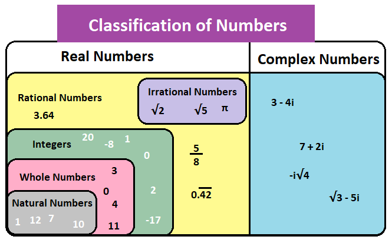

Types of Numbers
In mathematics, we need to know about the different types of numbers that we are dealing with. There are numbers like 1, 2, 3, ... etc., ones like 0.33333... , or ones like 5/7. We introduce students to these gradually, and each new type comes with its own uses, and its own challenges.The main types of numbers used in school mathematics are listed below:
- Natural Numbers (N), (also called positive integers, counting numbers, or natural numbers); They are the numbers {1, 2, 3, 4, 5, …}
- Whole Numbers (W). This is the set of natural numbers, plus zero, i.e., {0, 1, 2, 3, 4, 5, …}.
- Integers (Z). This is the set of all whole numbers plus all the negatives (or opposites) of the natural numbers, i.e., {… , ⁻2, ⁻1, 0, 1, 2, …}
- Rational numbers (Q). This is all the fractions where the top and bottom numbers are integers; e.g., 1/2, 3/4, 7/2, ⁻4/3, 4/1 [Note: The denominator cannot be 0, but the numerator can be].
- Real numbers (R), (also called measuring numbers or measurement numbers). This includes all numbers that can be written as a decimal. This includes fractions written in decimal form e.g., 0.5, 0.75 2.35, ⁻0.073, 0.3333, or 2.142857. It also includes all the irrational numbers such as π, √2 etc. Every real number corresponds to a point on the number line.

The natural numbers are also divided into the following categories:-
- Prime no:- A natural number greater than 1 which has only 1 and itself as factors. eg. 2, 3, 13, 97
- Composite no:- A natural number greater than 1 which has more factors than 1 and itself. eg. 4, 9, 69, 93
- Even no:- A natural number that comes on the table of 2. eg. 2, 46, 9404, 30228
- Odd no:- A natural number that doesn't come on the table of 2. eg. 1, 3, 101, 10291
- Co-prime nos:- Numbers whose greatest factor is 1 are pair of co-prime numbers. eg. (2, 3); (49, 25); (18, 91)
to see other topics:-